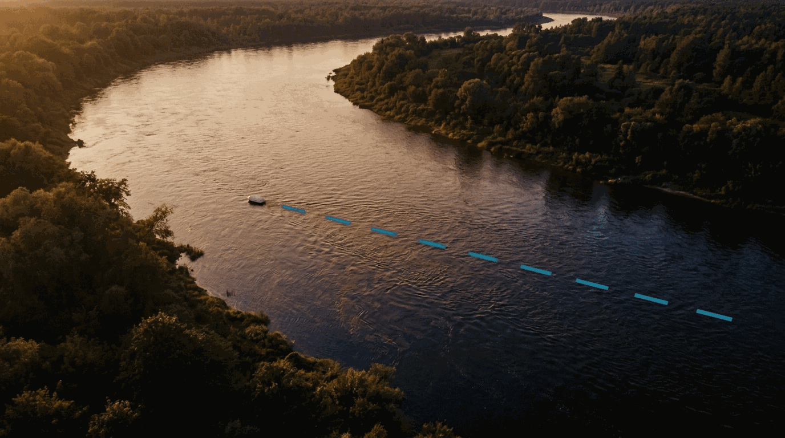
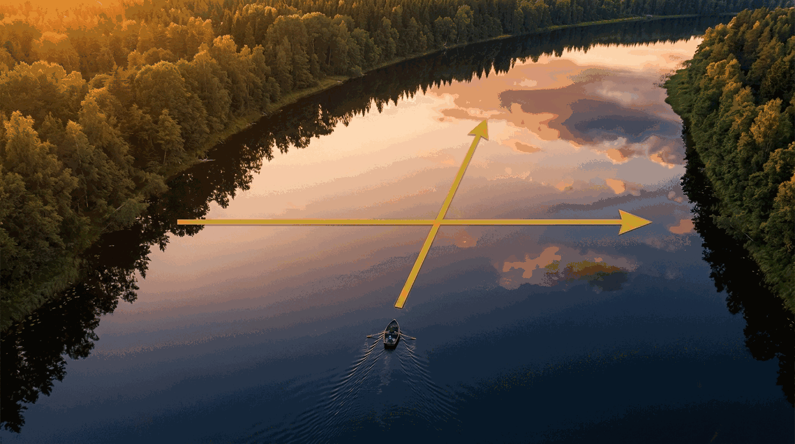
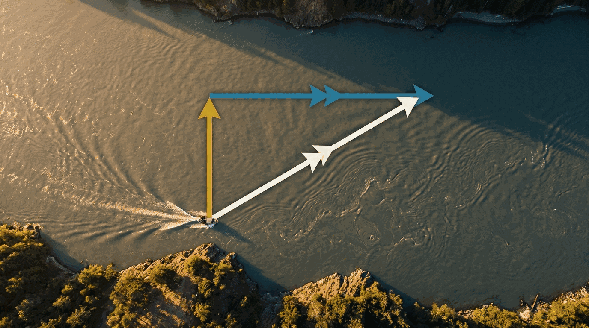
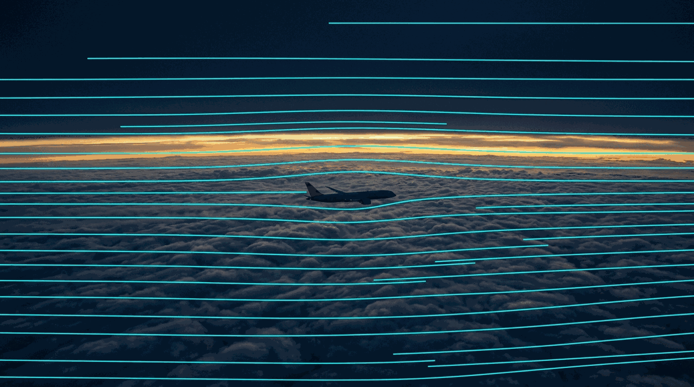
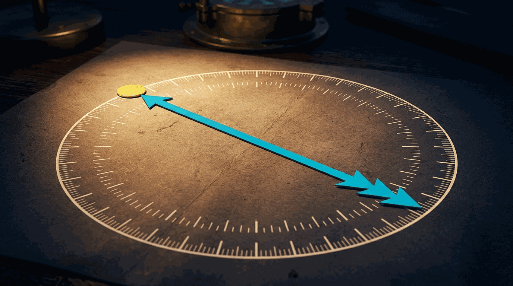
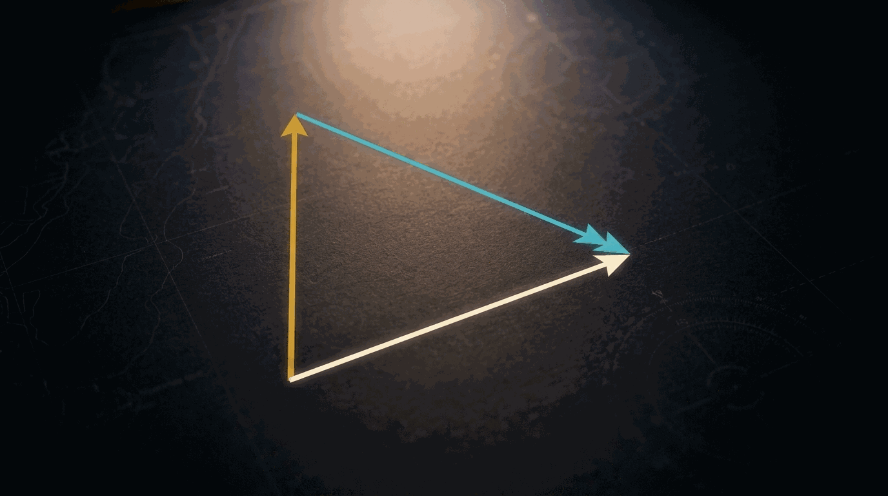
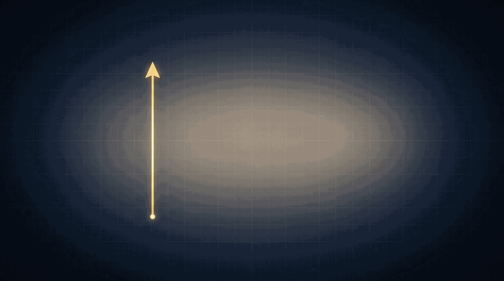
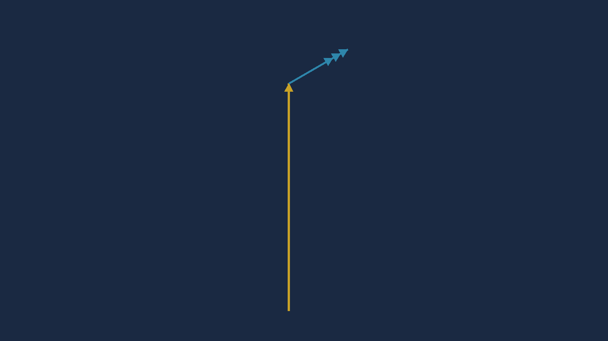
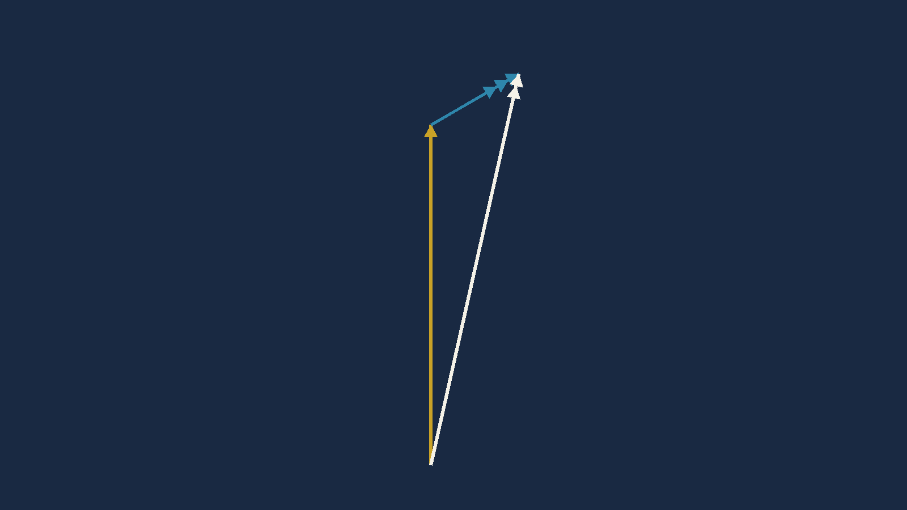
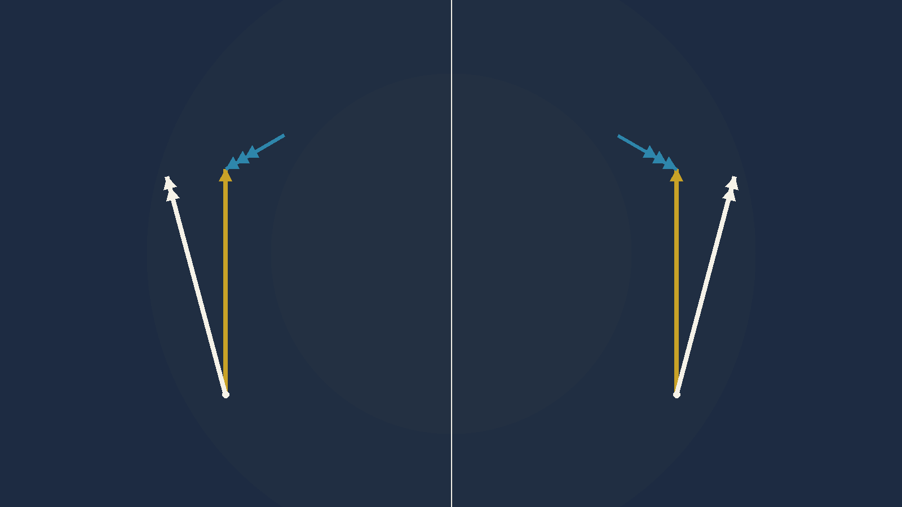

An aeroplane almost never goes where it is pointing. This chapter is the geometry of the difference — and it is the one piece of this module that the electronic computer lets you skip, and therefore never learn.
You are cruising at 100 knots true airspeed on a heading of 000° — due north, dead steady, wings level. The compass has not moved in twenty minutes.
You are travelling 012°, at 118 knots.
Nothing has failed. The aircraft is doing exactly what you asked. But a 30-knot wind from the south-west has been quietly carrying the whole air mass — and your aeroplane with it — sideways and forwards the entire time. Fly that heading for an hour believing you are going north and you will be 12 nautical miles east of where you planned.
The instruments are not lying to you. They are answering a different question.
This chapter is unusually strict about vocabulary, and the strictness is not pedantry. Every one of these words has been the wrong answer to an exam question because a student used it loosely.
The direction the aircraft's fore-and-aft axis is pointing. Where the nose is aimed. It can be measured from True, Magnetic or Compass north — so it is always written with a qualifier: 000°(T), 000°(M).
Heading is not where you are going. It is only where you are pointing.
The direction of the aircraft's path over the ground. Where you are actually going. Measured from True or Magnetic north — but never from Compass north, because the ground does not care about your compass.
The angular difference between heading and track. You always drift from your heading to your track — that phrase is the whole definition and it fixes the direction of the subtraction.
Heading 090°, track 097°: you have drifted from 090 to 097, so
7° of starboard (right) drift.
Heading 030°, track 026°: from 030 to 026, so
4° of port (left) drift.
WCA is drift's mirror. Same magnitude, applied the other way.
Carry this forward carefully. Chapter 8A solves for the heading
with sin⁻¹(W·sinθ ÷ TAS), and the number
that formula returns is the drift, not the WCA — so it is
subtracted from the track. Put a signed WCA into that subtraction instead
and you will aim twice the angle, on the wrong side. Compute with drift;
report WCA.
Drift is applied to heading to give track:
it tells you what the wind did to you.
WCA is applied to track to give heading: it
tells you what to do about the wind.
Heading 090°, track 097° means drift is +7° and WCA is −7°. Same seven degrees, opposite sense, and an exam will happily ask for either.
Port is left. Starboard is right. British and DGCA documents use them freely; American ones say left and right.
The memory aid that never fails: "port" and "left" both have four letters.
British usage before about 1950 meant heading. Much current American usage means track. Two respectable traditions, opposite meanings, same word.
This module never uses it. Everything is heading or track, and there is no ambiguity. Be aware that an examination paper may still use "course" — when it does, it almost always means desired track.
Newcomers find it hard to believe that something as insubstantial as wind can shove a 400-tonne aircraft sideways. So we will start with something you can see.
Imagine a river ten nautical miles wide, flowing at five knots.

Now the river is a still lake. You have a boat that does ten knots through the water. You point it straight at the far bank and open the throttle.

Same boat, same heading, same throttle. But the current is back.

It is continuous, not sudden. After 12 minutes you are two miles across and one mile down. After 24 minutes, four across and two down. The boat is being carried the whole time, smoothly, along one straight resultant path.
You can fix it by aiming off. If you want to arrive directly opposite, point the boat upstream of your destination. That is the Wind Correction Angle, three hundred years before anyone put it on an aeroplane. It is Chapter 8's whole subject.

Your aircraft is supported by that air mass. It is not fighting it, not pushing through it, not being buffeted by it. It is floating in it, exactly as the stick floats in the river — and it is carried with it, completely, whether it is a Cessna or a 747.
A 747 is no more able to resist a moving air mass than a stick is able to resist a moving river. Mass has nothing to do with it.
A vector is just an arrow that carries two pieces of information at once: a direction and a magnitude. Every navigation problem in this module is three of them arranged into a triangle.
Heading and TAS. Where the nose points, and how fast you move through the air. This is the speed you would make over the ground if the air were still.
W/V — wind direction and speed. Where the air mass is going, and how fast. Always named by where it comes from.
Track and ground speed. The resultant — what you get when you join the air vector to the wind vector. Where you actually go.
Air = 1. Ground = 2. Wind = 3.
An exam will hand you an unlabelled triangle and ask which side is which. The arrowheads are the answer, and they are the only answer, because the colours will not be there.
The order is easy to hold: they run 1, 2, 3 in the order the words appear in "air, ground, wind" — alphabetical.
A wind written 330/30 is a wind blowing from 330° at 30 knots. On a diagram, its arrow points toward 150° — the exact opposite of the number in its name.

You already use this convention without thinking. A southerly is warm because it has come up from the south. A westerly is wet because it has crossed the Atlantic. Nobody has ever meant "a wind heading south".
The aviation convention is the everyday one. It only feels strange when you start drawing arrows.
Add 180° before you draw, never after. Convert the W/V into a direction the arrow actually points, write that number down, and then draw. Students who try to hold the reversal in their head while also managing heading and drift are the ones who lose it.
Wind 240/30? The arrow points 060. Write "060" on your scrap paper and work with that.
Three vectors. Two you know, one you want. Join them nose to tail and the answer is the side that closes the shape.

Pilots do not draw this on graph paper in the cruise. They solve it on a computer — and the old slide-rule wind face was nothing more than a machine for producing this scale drawing quickly. It was literally drawing the triangle for you, on a rotating disc.
The CX-3 does the same job with trigonometry instead of geometry. The triangle has not gone anywhere. It is still what is being solved — you just no longer see it happen, which is exactly why you have to understand it now.
You are in a Warrior PA-28. TAS 100 knots. Steady heading 000°(T). Forecast W/V 240/30.
What will your track and ground speed be?



Nothing moves between them. The gold vector you drew first is still exactly where it was in the last frame. All that happens is that information gets added — and on the third frame the shape closes and the answer simply appears.
That is what "solving" a triangle of velocities means. There is no calculation in the drawing. There is only the closing side.
Problem. TAS 100 kt, heading 000°(T), W/V 240/30. Find track and ground speed.
1. Turn the wind round. From 240 means it points toward 060°.
2. Break both vectors into east and north parts:
E = 100·sin0 + 30·sin60 = 25.98
N = 100·cos0 + 30·cos60 = 115.0
3. Ground speed is the hypotenuse:
√(25.98² + 115.0²)
4. Track is the angle:
tan⁻¹(25.98 ÷ 115.0)
Track 013° · GS 118 kt
GS, TAS, TCrs
and THdg — and solves for the wind.TCrs — the track
— as an input and returns CHdg. It solves the
opposite problem: known track, find heading.Track 012° · GS 118 kt
Which do you use? For a single triangle
in an exam, the trigonometry is fast and it always works. The PLAN
menu earns its keep on a multi-leg flight plan, which is Chapter 8B. Know
both, because the CX-3's Wind Correction function does not answer this
question — it answers the reverse one, and reaching for it here is
a genuine trap.
Sanity check — do this one in your head first. The wind is behind you and off to the left, so it must push you forward and right. Ground speed should therefore be more than 100, and track should be east of 000. Both are true: 118 knots, tracking 012. If you had got 89 knots and 343°, you would have applied the wind backwards.
The trigonometry gives 12.7°, which rounds to 013. The published answer is 012, read off a rotating disc to the nearest degree.
Neither is wrong to any degree that matters — a degree of track over 100 nautical miles is under two miles. But when exam options are one degree apart, trust the arithmetic. It is exact, and it is reproducible.

Track = Heading + Drift, with starboard drift positive and port drift negative.
Heading 000 with 12° starboard drift gives track 012.
Heading 090 with 4° port drift gives track 086.
And the reverse, for Chapter 8: Heading = Track − Drift.
Heading 005° with 8° of port drift is not track −003°. It is track 357°.
Anything at or below zero, add 360. Anything at or above 360, subtract 360. Do it as a reflex, before you look at the answer options — because one of those options will be the number you get if you forget.
Every row gives you a heading, a W/V and a TAS. Find the track and the ground speed.
That is the triangle with the air vector and wind vector known, solving for the ground vector — exactly Figure 7.9. Thirty of them. Answers follow the second table.
| # | HDG°(T) | W/V | Track°(T) | TAS | GS |
|---|---|---|---|---|---|
| 1 | 273 | 230/40 | 150 | ||
| 2 | 181 | 150/30 | 90 | ||
| 3 | 054 | 350/28 | 88 | ||
| 4 | 084 | 255/55 | 210 | ||
| 5 | 141 | 280/35 | 190 | ||
| 6 | 274 | 030/40 | 150 | ||
| 7 | 213 | 060/35 | 150 | ||
| 8 | 029 | 090/40 | 170 | ||
| 9 | 305 | 350/16 | 100 | ||
| 10 | 187 | 270/60 | 110 | ||
| 11 | 310 | 045/45 | 320 |
| # | HDG°(T) | W/V | Track°(T) | TAS | GS |
|---|---|---|---|---|---|
| 1 | 138 | 125/50 | 390 | ||
| 2 | 253 | 180/70 | 415 | ||
| 3 | 131 | 210/40 | 485 | ||
| 4 | 100 | 315/55 | 480 | ||
| 5 | 270 | 315/55 | 110 | ||
| 6 | 200 | 125/50 | 210 | ||
| 7 | 180 | 210/40 | 135 | ||
| 8 | 140 | 180/70 | 170 | ||
| 9 | 093 | 045/45 | 210 | ||
| 10 | 103 | 060/35 | 240 | ||
| 11 | 237 | 270/60 | 205 | ||
| 12 | 343 | 030/40 | 350 | ||
| 13 | 030 | 350/16 | 390 | ||
| 14 | 315 | 280/35 | 375 | ||
| 15 | 145 | 090/40 | 420 | ||
| 16 | 290 | 255/55 | 490 | ||
| 17 | 191 | 150/30 | 480 | ||
| 18 | 257 | 350/28 | 475 | ||
| 19 | 157 | 230/140 | 460 |
Every row was solved by resolving both vectors into east and north components and recombining — the exact method in Worked Example 7.1. Tracks are rounded to the nearest degree, ground speeds to the nearest knot.
All thirty agree with the published key within one degree and three knots. Unlike Chapters 5 and 6, there is nothing to flag here — this chapter's answers are sound throughout.
The drift column is not in the original question. It is added so you can check your reasoning, not just your answer.
Row 1 in full. HDG 273°, W/V 230/40, TAS 150.
1. Wind from 230 points toward 050°.
2. Components:
E = 150·sin273 + 40·sin050 = −119.2
N = 150·cos273 + 40·cos050 = 33.6
3. GS = √(119.2²+33.6²)
4. Track = atan2(−119.2, 33.6)
Track 286° · GS 124 kt
Heading 273 is roughly west. The wind is from 230 — the south-west — so it is coming over your left shoulder.
A wind from the left must push you right, so track should be more than 273.
It is also partly behind you, so ground speed should be less than TAS — no: partly behind means more. Check the geometry: from 230 onto a 273 heading is close to abeam, slightly behind.
expect track just right of 273, GS near 150 or below
286 and 124. Track moved right as predicted. The ground speed came out well below TAS because the wind, resolved along the track, is mostly a headwind component. The reasoning got the direction right and that is all it has to do.
Rows 2–11 are the identical four steps: reverse the wind, resolve, recombine, read.
| # | HDG°(T) | W/V | Track°(T) | TAS | GS | drift |
|---|---|---|---|---|---|---|
| 1 | 273 | 230/40 | 286 | 150 | 124 | 13°S |
| 2 | 181 | 150/30 | 195 | 90 | 66 | 14°S |
| 3 | 054 | 350/28 | 072 | 88 | 80 | 18°S |
| 4 | 084 | 255/55 | 082 | 210 | 264 | 2°P |
| 5 | 141 | 280/35 | 135 | 190 | 218 | 6°P |
| 6 | 274 | 030/40 | 262 | 150 | 171 | 12°P |
| 7 | 213 | 060/35 | 218 | 150 | 182 | 5°S |
| 8 | 029 | 090/40 | 016 | 170 | 155 | 13°P |
| 9 | 305 | 350/16 | 298 | 100 | 89 | 7°P |
| 10 | 187 | 270/60 | 157 | 110 | 119 | 30°P |
| 11 | 310 | 045/45 | 302 | 320 | 327 | 8°P |
Row 19 in full — and read the wind speed twice. HDG 157°, W/V 230/140, TAS 460.
1. Wind from 230 points toward 050°. Speed 140 knots.
2. Components:
E = 460·sin157 + 140·sin050 = 287.0
N = 460·cos157 + 140·cos050 = −333.4
3. GS = √(287.0²+333.4²)
Track 139° · GS 440 kt
140 knots of wind looks like a misprint. It is not.
At the levels where a 460-knot TAS lives, the jet stream routinely runs 100 to 200 knots.
Check it: at 40 knots this row would give track 152 and GS 450. The published answer is 139 and 440 — which only works at 140.
the wind really is 140 kt
Look at what that wind did. It bent the track 18 degrees and took 20 knots off the ground speed. Over a three-hour sector, ignoring it puts you the better part of two hundred miles from where you meant to be. This is why the jet stream is a flight-planning subject and not a curiosity.
Rows 1–18 use the same four steps. The only thing that changes is how hard the wind is working.
| # | HDG°(T) | W/V | Track°(T) | TAS | GS | drift |
|---|---|---|---|---|---|---|
| 1 | 138 | 125/50 | 140 | 390 | 341 | 2°S |
| 2 | 253 | 180/70 | 263 | 415 | 400 | 10°S |
| 3 | 131 | 210/40 | 126 | 485 | 479 | 5°P |
| 4 | 100 | 315/55 | 103 | 480 | 526 | 3°S |
| 5 | 270 | 315/55 | 241 | 110 | 81 | 29°P |
| 6 | 200 | 125/50 | 214 | 210 | 203 | 14°S |
| 7 | 180 | 210/40 | 169 | 135 | 102 | 11°P |
| 8 | 140 | 180/70 | 119 | 170 | 125 | 21°P |
| 9 | 093 | 045/45 | 104 | 210 | 183 | 11°S |
| 10 | 103 | 060/35 | 109 | 240 | 216 | 6°S |
| 11 | 237 | 270/60 | 225 | 205 | 158 | 12°P |
| 12 | 343 | 030/40 | 338 | 350 | 324 | 5°P |
| 13 | 030 | 350/16 | 032 | 390 | 378 | 2°S |
| 14 | 315 | 280/35 | 318 | 375 | 347 | 3°S |
| 15 | 145 | 090/40 | 150 | 420 | 398 | 5°S |
| 16 | 290 | 255/55 | 294 | 490 | 446 | 4°S |
| 17 | 191 | 150/30 | 193 | 480 | 458 | 2°S |
| 18 | 257 | 350/28 | 254 | 475 | 477 | 3°P |
| 19 | 157 | 230/140 | 139 | 460 | 440 | 18°P |
Drift shrinks as TAS grows. Compare row 5 (TAS 110, drift 28°) with row 3 (TAS 485, drift 5°) — similar winds, wildly different drift. The faster you go, the less time the wind has to work on you.
Ground speed can beat TAS by a long way. Row 4: TAS 480, ground speed 525. That is 45 knots of free progress — and on the reciprocal it would be 45 knots against you. The same air mass gives and takes.
No computer needed for most of these. 90 seconds. Go.
Photograph this page.
| Thing | What it is | How to remember it |
|---|---|---|
| Heading | Where the nose points | Gold vector · 1 arrowhead |
| Track | Where you actually go | Warm white vector · 2 arrowheads |
| W/V | Where the air comes from, and how fast | Cyan vector · 3 arrowheads |
| Drift | Heading to track | Track = Heading + Drift (starboard +) |
| WCA | Track to heading | Same number as drift, opposite sign. The Ch 8A formula returns drift — subtract it. |
| Port / starboard | Left / right | "port" and "left" — four letters each |
| Wind direction | Where it comes FROM | Arrow points to W/V + 180° |
| Track & GS from a known wind | The Chapter 7 problem | Trigonometry — no CX-3 function does this |
FLT → Wind Correction | Solves for the wind | Not this chapter's problem — it runs backwards |